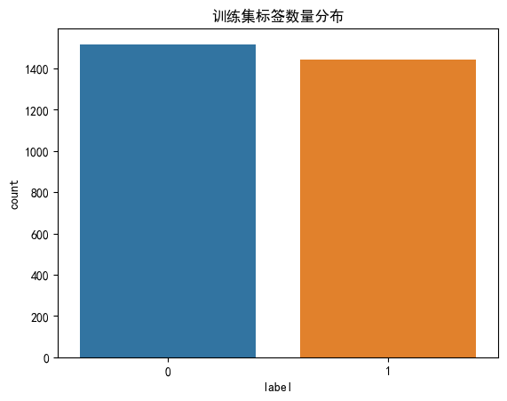
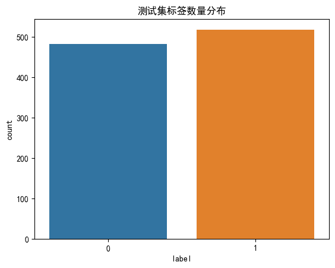
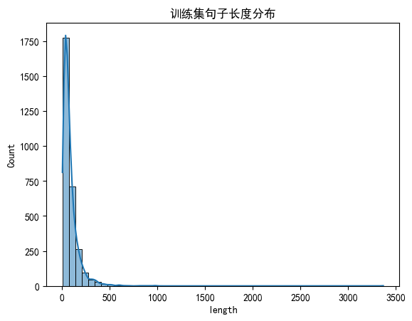
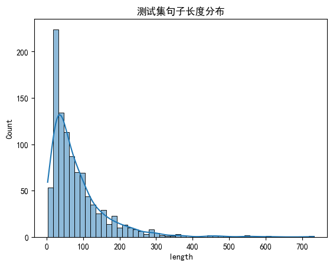
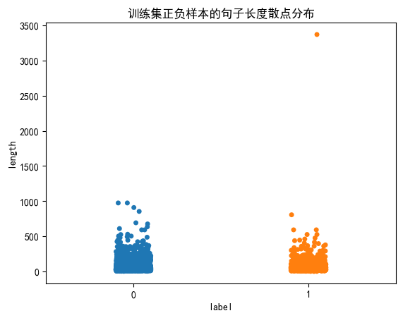
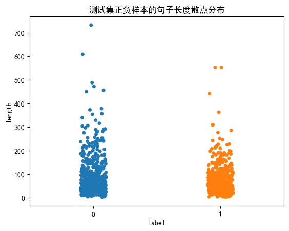

import torch import matplotlib.pyplot as plt # 设置中文字体 plt.rcParams['font.sans-serif'] = ['SimHei'] # 微软雅黑 plt.rcParams['axes.unicode_minus'] = False # 解决负号显示问题 # 设置设备，优先使用顺序：GPU > MPS > CPU DEVICE = torch.device( "cuda" if torch.cuda.is_available() else "mps" if torch.backends.mps.is_available() else "cpu" ) print(f"当前设备：{DEVICE}")
当前设备：cuda
1 文本数据分析
学习目标
- 了解文本数据分析的作用.
- 掌握常用的几种文本数据分析方法.
1.1 文件数据分析介绍
-
文本数据分析的作用:
- 帮助理解语料, 快速检查出语料可能存在的问题, 指导模型训练过程中超参数的选择.
-
常用的几种文本数据分析方法:
-
标签数量分布
- 句子长度分布
- 词频统计与关键词词云
1.2 数据集说明
- 基于真实的中文酒店评论语料来讲解常用的几种文本数据分析方法.
- 中文酒店评论语料，属于二分类的中文情感分析语料, 该语料存放在"./cn_data"目录下.
- 其中train.tsv代表训练集, dev.tsv代表验证集, 二者数据样式相同.
- train.tsv数据样式:
sentence label 早餐不好,服务不到位,晚餐无西餐,早餐晚餐相同,房间条件不好,餐厅不分吸烟区.房间不分有无烟房. 0 去的时候 ,酒店大厅和餐厅在装修,感觉大厅有点挤.由于餐厅装修本来该享受的早饭,也没有享受(他们是8点开始每个房间送,但是我时间来不及了)不过前台服务员态度好! 1 有很长时间没有在西藏大厦住了，以前去北京在这里住的较多。这次住进来发现换了液晶电视，但网络不是很好，他们自己说是收费的原因造成的。其它还好。 1 非常好的地理位置，住的是豪华海景房，打开窗户就可以看见栈桥和海景。记得很早以前也住过，现在重新装修了。总的来说比较满意，以后还会住 1 交通很方便，房间小了一点，但是干净整洁，很有香港的特色，性价比较高，推荐一下哦 1 酒店的装修比较陈旧，房间的隔音，主要是卫生间的隔音非常差，只能算是一般的 0 酒店有点旧，房间比较小，但酒店的位子不错，就在海边，可以直接去游泳。8楼的海景打开窗户就是海。如果想住在热闹的地带，这里不是一个很好的选择，不过威海城市真的比较小，打车还是相当便宜的。晚上酒店门口出租车比较少。 1 位置很好，走路到文庙、清凉寺5分钟都用不了，周边公交车很多很方便，就是出租车不太爱去（老城区路窄爱堵车），因为是老宾馆所以设施要陈旧些， 1 酒店设备一般，套房里卧室的不能上网，要到客厅去。 0
-
train.tsv数据样式说明:
- train.tsv中的数据内容共分为2列, 第一列数据代表具有感情色彩的评论文本;
- 第二列数据, 0或1, 代表每条文本数据是积极或者消极的评论, 0代表消极, 1代表积极.
-
获取标签数量分布
- 获取句子长度分布
- 获取正负样本长度散点分布
- 获取不同词总数统计
- 获取高频形容词词云
""" 演示 文本数据分析的常见操作 文本数据分析的作用： 帮助我们理解语料，并检查语料中可能存在的问题。 例如： 标签不均衡：有的标签数量很多，有的标签数量很少，想办法让标签数量更均衡 数据质量：错别字，语法错误，重复内容，噪声 句子长度分布范围：根据数据中的句子长度分布范围来选择合理的最大长度max_length，用来进行后续的文本长度规范 文本数据分析的常见操作： 标签数量分布：查看标签有没有不均衡情况 句子长度分布：查看数据中句子长度分布情况，由此来设置合理的最大长度max_length 词频统计和关键字词云：审查语料库中有没有不合理的内容，比如好评中出现了大量的“不方便”，“不是很好” 需要掌握的： sns.countplot:绘制离散值的频次直方图，标签数量分布 sns.histplot: 绘制连续值的区间分布直方图，句子长度分布 train_data["sentence"].apply(lambda x: len(x)) """ # 导包 import jieba import seaborn as sns # 用来画图，类似matplotlib import pandas as pd import matplotlib.pyplot as plt # 推荐 pip install matplotlib==3.9 from itertools import chain # 迭代器工具 import jieba.posseg as pseg # 词性标注POS(名词, 动词, 形容词..._ from wordcloud import WordCloud # 词云 pip install wordcloud from collections import Counter # 统计词频 # 设置中文字体 plt.rcParams['font.sans-serif'] = ['SimHei'] # 微软雅黑 plt.rcParams['axes.unicode_minus'] = False # 解决负号显示问题 # 苹果电脑 # plt.rcParams['font.sans-serif'] = ['Arial Unicode MS'] # 1.定义函数，演示 标签数量分布，绘制直方图 # sns.countplot:绘制离散值的频次直方图 def demo01(): # 1.读取数据集pd.read_csv() train_data = pd.read_csv(r"./data/train.tsv", sep='\t') # 也可以选择pd.read_table() print(train_data.head()) test_data = pd.read_csv(r"./data/dev.tsv", sep='\t') print(test_data.head()) # 2.使用sns.countplot来绘制标签的频次直方图-标签数量分布 # 训练集 sns.countplot(x="label", data=train_data, hue="label", legend=False) plt.title("训练集标签数量分布") plt.show() # 测试集 sns.countplot(x="label", data=test_data, hue="label", legend=False) plt.title("测试集标签数量分布") plt.show() # 2.定义函数，演示 句子长度分布 # sns.histplot: 绘制连续值的区间分布直方图 def demo02(): # 1.读取数据集 train_data = pd.read_csv(r"./data/train.tsv", sep='\t') print(train_data.head()) test_data = pd.read_csv(r"./data/dev.tsv", sep='\t') print(test_data.head()) # 2.计算句子长度 # apply(): 对DataFrame的series对象的每一个元素进行操作 train_data["length"] = train_data["sentence"].apply(lambda x: len(x)) # train_data['sentence_length'] = list(map(lambda x: len(x), train_data['sentence'])) print(train_data.head()) test_data["length"] = test_data["sentence"].apply(lambda x: len(x)) print(test_data.head()) # 3.绘制句子长度分布直方图 # 参数1：传入的数据列表；参数2：直方图的分段数，有多少个柱子；参数3：是否显示核密度曲线 sns.histplot(train_data["length"], bins=50, kde=True) plt.title("训练集句子长度分布") plt.show() sns.histplot(test_data["length"], bins=50, kde=True) plt.title("测试集句子长度分布") plt.show() # 3.定义函数，演示 正负样本的句子长度散点分布 # sns.stripplot: 绘制离散标签的连续值散点分布 def demo03(): # 1.读取数据集 train_data = pd.read_csv(r"./data/train.tsv", sep='\t') print(train_data.head()) print(train_data.shape) test_data = pd.read_csv(r"./data/dev.tsv", sep='\t') print(test_data.head()) print(test_data.shape) # 2.计算句子长度 # apply(): 对DataFrame的series对象的每一个元素进行操作 train_data["length"] = train_data["sentence"].apply(lambda x: len(x)) # train_data['sentence_length'] = list(map(lambda x: len(x), train_data['sentence'])) print(train_data.head()) test_data["length"] = test_data["sentence"].apply(lambda x: len(x)) print(test_data.head()) # 3.绘制正负样本的句子长度散点分布图 # 参数1：x轴标签；参数2：y轴标签；参数3：数据集；参数4：是否显示颜色, 参数5：是否显示图例 sns.stripplot(x="label", y="length", data=train_data, hue="label", legend=False) plt.title("训练集正负样本的句子长度散点分布") plt.show() sns.stripplot(x="label", y="length", data=test_data, hue="label", legend=False) plt.title("测试集正负样本的句子长度散点分布") plt.show() # 4.定义函数，演示 统计词频 def demo04(): # 1.读取数据集 train_data = pd.read_csv(r"./data/train.tsv", sep='\t') print(train_data.head()) print(train_data.shape) test_data = pd.read_csv(r"./data/dev.tsv", sep='\t') print(test_data.head()) print(test_data.shape) # 2.统计所有的词，分词-连成串串 # 训练集 # apply(): 对DataFrame的series对象的每一个元素进行操作 # lambda函数：匿名函数，等价于一个函数 train_words = train_data["sentence"].apply(lambda x: jieba.lcut(x)) train_all_words = list(chain(*train_words.tolist())) test_words = test_data["sentence"].apply(lambda x: jieba.lcut(x)) test_all_words = list(chain(*test_words.tolist())) print(f"训练集所有词的数量：{len(train_all_words)}") print(f"测试集所有词的数量：{len(test_all_words)}") # 3.统计词频 train_words_count = Counter(train_all_words) test_words_count = Counter(test_all_words) # 4.打印结果 # print(f"训练集词频统计结果：{train_words_count}") # print(f"测试集词频统计结果：{test_words_count}") print(f"训练集词表大小：{len(train_words_count)}") print(f"测试集词表大小：{len(test_words_count)}") # 5.定义函数，演示 高频形容词词云 # 定义函数，获取 形容词 def get_adj(words_list): # 1.定义一个列表，来存储 形容词 results = [] # 2.使用pseg.lcut来进行分词和词性标注，获取形容词 for word, flag in pseg.lcut(words_list): if flag == "a": results.append(word) # 3.返回形容词列表 return results # 定义函数，生成词云 def demo05(words_list,title="训练集正样本的高频形容词词云"): # 1.创建WordCloud对象 word_cloud = WordCloud( font_path=r"./data/SimHei.ttf", # 设置字体 max_words=100, # 设置最大显示的词数 background_color="white", # 背景颜色 ) # 2.转换词序列为空格分割的字符串，来符合WordCloud对象要求的输入格式 keyword_list = " ".join(words_list) # 3.使用WordCloud.generate方法来生成词云 word_cloud.generate(keyword_list) # 4.绘制词云图像 plt.figure(figsize=(8, 8)) plt.imshow(word_cloud) plt.axis("off") plt.title(title) plt.show() # 定义函数，来使用数据集生成词云 def demo06(): # 0.读取数据集 train_data = pd.read_csv(r"./data/train.tsv", sep='\t') print(train_data.head()) print(train_data.shape) test_data = pd.read_csv(r"./data/dev.tsv", sep='\t') print(test_data.head()) print(test_data.shape) # 1.指定数据集 # 训练集正样本 train_a_list_1 = train_data[train_data['label']==1]["sentence"] train_a_list_1 = train_a_list_1.apply(get_adj) train_a_list_1 = list(chain(*train_a_list_1.tolist())) # print(train_a_list_1) # 训练集负样本 train_a_list_0 = train_data[train_data['label'] == 0]["sentence"] train_a_list_0 = train_a_list_0.apply(get_adj) train_a_list_0 = list(chain(*train_a_list_0.tolist())) # print(train_a_list_0) # 测试集正样本 # 测试集负样本 # 2.生成词云图 demo05(train_a_list_1,title="训练集正样本的高频形容词词云") demo05(train_a_list_0,title="训练集负样本的高频形容词词云") # 测试 if __name__ == '__main__': # 1.演示 标签数量分布 demo01() # 2.演示 句子长度分布 demo02() # 3.绘制正负样本的句子长度散点分布 demo03() # 4.统计词频 demo04() # 5.高频形容词词云 demo06()
<本地用户目录>\.conda\envs\nlp_project\lib\site-packages\jieba\_compat.py:18: UserWarning: pkg_resources is deprecated as an API. See https://setuptools.pypa.io/en/latest/pkg_resources.html. The pkg_resources package is slated for removal as early as 2025-11-30. Refrain from using this package or pin to Setuptools<81.
import pkg_resources
sentence label
0 早餐不好,服务不到位,晚餐无西餐,早餐晚餐相同,房间条件不好,餐厅不分吸烟区.房间不分有无烟房. 0
1 去的时候 ,酒店大厅和餐厅在装修,感觉大厅有点挤.由于餐厅装修本来该享受的早饭,也没有享受(... 1
2 有很长时间没有在西藏大厦住了，以前去北京在这里住的较多。这次住进来发现换了液晶电视，但网络不... 1
3 非常好的地理位置，住的是豪华海景房，打开窗户就可以看见栈桥和海景。记得很早以前也住过，现在重... 1
4 交通很方便，房间小了一点，但是干净整洁，很有香港的特色，性价比较高，推荐一下哦 1
sentence label
0 房间里有电脑，虽然房间的条件略显简陋，但环境、服务还有饭菜都还是很不错的。如果下次去无锡，我... 1
1 我们是5月1日通过携程网入住的，条件是太差了，根本达不到四星级的标准，所有的东西都很陈旧，卫... 0
2 离火车站很近很方便。住在东楼标间，相比较在九江住的另一家酒店，房间比较大。卫生间设施略旧。服... 1
3 坐落在香港的老城区，可以体验香港居民生活，门口交通很方便，如果时间不紧，坐叮当车很好呀！周围... 1
4 酒店前台服务差，对待客人不热情。号称携程没有预定。感觉是客人在求他们，我们一定得住。这样的宾... 0


sentence label
0 早餐不好,服务不到位,晚餐无西餐,早餐晚餐相同,房间条件不好,餐厅不分吸烟区.房间不分有无烟房. 0
1 去的时候 ,酒店大厅和餐厅在装修,感觉大厅有点挤.由于餐厅装修本来该享受的早饭,也没有享受(... 1
2 有很长时间没有在西藏大厦住了，以前去北京在这里住的较多。这次住进来发现换了液晶电视，但网络不... 1
3 非常好的地理位置，住的是豪华海景房，打开窗户就可以看见栈桥和海景。记得很早以前也住过，现在重... 1
4 交通很方便，房间小了一点，但是干净整洁，很有香港的特色，性价比较高，推荐一下哦 1
sentence label
0 房间里有电脑，虽然房间的条件略显简陋，但环境、服务还有饭菜都还是很不错的。如果下次去无锡，我... 1
1 我们是5月1日通过携程网入住的，条件是太差了，根本达不到四星级的标准，所有的东西都很陈旧，卫... 0
2 离火车站很近很方便。住在东楼标间，相比较在九江住的另一家酒店，房间比较大。卫生间设施略旧。服... 1
3 坐落在香港的老城区，可以体验香港居民生活，门口交通很方便，如果时间不紧，坐叮当车很好呀！周围... 1
4 酒店前台服务差，对待客人不热情。号称携程没有预定。感觉是客人在求他们，我们一定得住。这样的宾... 0
sentence label length
0 早餐不好,服务不到位,晚餐无西餐,早餐晚餐相同,房间条件不好,餐厅不分吸烟区.房间不分有无烟房. 0 48
1 去的时候 ,酒店大厅和餐厅在装修,感觉大厅有点挤.由于餐厅装修本来该享受的早饭,也没有享受(... 1 80
2 有很长时间没有在西藏大厦住了，以前去北京在这里住的较多。这次住进来发现换了液晶电视，但网络不... 1 70
3 非常好的地理位置，住的是豪华海景房，打开窗户就可以看见栈桥和海景。记得很早以前也住过，现在重... 1 65
4 交通很方便，房间小了一点，但是干净整洁，很有香港的特色，性价比较高，推荐一下哦 1 39
sentence label length
0 房间里有电脑，虽然房间的条件略显简陋，但环境、服务还有饭菜都还是很不错的。如果下次去无锡，我... 1 55
1 我们是5月1日通过携程网入住的，条件是太差了，根本达不到四星级的标准，所有的东西都很陈旧，卫... 0 90
2 离火车站很近很方便。住在东楼标间，相比较在九江住的另一家酒店，房间比较大。卫生间设施略旧。服... 1 75
3 坐落在香港的老城区，可以体验香港居民生活，门口交通很方便，如果时间不紧，坐叮当车很好呀！周围... 1 103
4 酒店前台服务差，对待客人不热情。号称携程没有预定。感觉是客人在求他们，我们一定得住。这样的宾... 0 54


sentence label
0 早餐不好,服务不到位,晚餐无西餐,早餐晚餐相同,房间条件不好,餐厅不分吸烟区.房间不分有无烟房. 0
1 去的时候 ,酒店大厅和餐厅在装修,感觉大厅有点挤.由于餐厅装修本来该享受的早饭,也没有享受(... 1
2 有很长时间没有在西藏大厦住了，以前去北京在这里住的较多。这次住进来发现换了液晶电视，但网络不... 1
3 非常好的地理位置，住的是豪华海景房，打开窗户就可以看见栈桥和海景。记得很早以前也住过，现在重... 1
4 交通很方便，房间小了一点，但是干净整洁，很有香港的特色，性价比较高，推荐一下哦 1
(2960, 2)
sentence label
0 房间里有电脑，虽然房间的条件略显简陋，但环境、服务还有饭菜都还是很不错的。如果下次去无锡，我... 1
1 我们是5月1日通过携程网入住的，条件是太差了，根本达不到四星级的标准，所有的东西都很陈旧，卫... 0
2 离火车站很近很方便。住在东楼标间，相比较在九江住的另一家酒店，房间比较大。卫生间设施略旧。服... 1
3 坐落在香港的老城区，可以体验香港居民生活，门口交通很方便，如果时间不紧，坐叮当车很好呀！周围... 1
4 酒店前台服务差，对待客人不热情。号称携程没有预定。感觉是客人在求他们，我们一定得住。这样的宾... 0
(1000, 2)
sentence label length
0 早餐不好,服务不到位,晚餐无西餐,早餐晚餐相同,房间条件不好,餐厅不分吸烟区.房间不分有无烟房. 0 48
1 去的时候 ,酒店大厅和餐厅在装修,感觉大厅有点挤.由于餐厅装修本来该享受的早饭,也没有享受(... 1 80
2 有很长时间没有在西藏大厦住了，以前去北京在这里住的较多。这次住进来发现换了液晶电视，但网络不... 1 70
3 非常好的地理位置，住的是豪华海景房，打开窗户就可以看见栈桥和海景。记得很早以前也住过，现在重... 1 65
4 交通很方便，房间小了一点，但是干净整洁，很有香港的特色，性价比较高，推荐一下哦 1 39
sentence label length
0 房间里有电脑，虽然房间的条件略显简陋，但环境、服务还有饭菜都还是很不错的。如果下次去无锡，我... 1 55
1 我们是5月1日通过携程网入住的，条件是太差了，根本达不到四星级的标准，所有的东西都很陈旧，卫... 0 90
2 离火车站很近很方便。住在东楼标间，相比较在九江住的另一家酒店，房间比较大。卫生间设施略旧。服... 1 75
3 坐落在香港的老城区，可以体验香港居民生活，门口交通很方便，如果时间不紧，坐叮当车很好呀！周围... 1 103
4 酒店前台服务差，对待客人不热情。号称携程没有预定。感觉是客人在求他们，我们一定得住。这样的宾... 0 54


Building prefix dict from the default dictionary ...
Loading model from cache <本地用户目录>\AppData\Local\Temp\jieba.cache
sentence label
0 早餐不好,服务不到位,晚餐无西餐,早餐晚餐相同,房间条件不好,餐厅不分吸烟区.房间不分有无烟房. 0
1 去的时候 ,酒店大厅和餐厅在装修,感觉大厅有点挤.由于餐厅装修本来该享受的早饭,也没有享受(... 1
2 有很长时间没有在西藏大厦住了，以前去北京在这里住的较多。这次住进来发现换了液晶电视，但网络不... 1
3 非常好的地理位置，住的是豪华海景房，打开窗户就可以看见栈桥和海景。记得很早以前也住过，现在重... 1
4 交通很方便，房间小了一点，但是干净整洁，很有香港的特色，性价比较高，推荐一下哦 1
(2960, 2)
sentence label
0 房间里有电脑，虽然房间的条件略显简陋，但环境、服务还有饭菜都还是很不错的。如果下次去无锡，我... 1
1 我们是5月1日通过携程网入住的，条件是太差了，根本达不到四星级的标准，所有的东西都很陈旧，卫... 0
2 离火车站很近很方便。住在东楼标间，相比较在九江住的另一家酒店，房间比较大。卫生间设施略旧。服... 1
3 坐落在香港的老城区，可以体验香港居民生活，门口交通很方便，如果时间不紧，坐叮当车很好呀！周围... 1
4 酒店前台服务差，对待客人不热情。号称携程没有预定。感觉是客人在求他们，我们一定得住。这样的宾... 0
(1000, 2)
Loading model cost 0.353 seconds.
Prefix dict has been built successfully.
训练集所有词的数量：156952
测试集所有词的数量：52422
训练集词表大小：12162
测试集词表大小：6857
sentence label
0 早餐不好,服务不到位,晚餐无西餐,早餐晚餐相同,房间条件不好,餐厅不分吸烟区.房间不分有无烟房. 0
1 去的时候 ,酒店大厅和餐厅在装修,感觉大厅有点挤.由于餐厅装修本来该享受的早饭,也没有享受(... 1
2 有很长时间没有在西藏大厦住了，以前去北京在这里住的较多。这次住进来发现换了液晶电视，但网络不... 1
3 非常好的地理位置，住的是豪华海景房，打开窗户就可以看见栈桥和海景。记得很早以前也住过，现在重... 1
4 交通很方便，房间小了一点，但是干净整洁，很有香港的特色，性价比较高，推荐一下哦 1
(2960, 2)
sentence label
0 房间里有电脑，虽然房间的条件略显简陋，但环境、服务还有饭菜都还是很不错的。如果下次去无锡，我... 1
1 我们是5月1日通过携程网入住的，条件是太差了，根本达不到四星级的标准，所有的东西都很陈旧，卫... 0
2 离火车站很近很方便。住在东楼标间，相比较在九江住的另一家酒店，房间比较大。卫生间设施略旧。服... 1
3 坐落在香港的老城区，可以体验香港居民生活，门口交通很方便，如果时间不紧，坐叮当车很好呀！周围... 1
4 酒店前台服务差，对待客人不热情。号称携程没有预定。感觉是客人在求他们，我们一定得住。这样的宾... 0
(1000, 2)
- 在深度学习模型评估中, 一般使用ACC作为评估指标, 通常将二分类任务的ACC的基线设在50%左右, 需要正负样本比例在1:1左右.
- 通过绘制句子长度分布图, 可知语料中句子长度的分布情况, 模型要求输入为固定长度的张量，句子长度分布可以指导之后的句子截断补齐为合理长度.
- 通过查看正负样本长度散点图, 可以有效定位异常点, 进行人工审查.
- 根据高频形容词词云图, 可以简单评估当前语料质量, 对违反语料标签含义的词进行人工审查. 上图中的正样本多数是褒义词, 而负样本多数是贬义词, 基本符合要求, 但是负样本词云中也存在"方便", 可以进一步审查.
1.3 小结
- 文本数据分析的作用:
- 帮助理解数据语料, 快速检查出语料可能存在的问题, 并指导之后模型训练中的超参数选择.
-
文本数据分析方法:
- 标签数量分布
- 句子长度分布
- 词频统计与关键词词云
-
基于真实的中文酒店评论语料进行几种文本数据分析方法.
- 获得数据集的标签数量分布
- 获取数据集的句子长度分布
- 获取数据集的正负样本长度散点分布
- 获得数据集的不同词总数统计
- 获得数据集的正负样本的高频形容词词云
2 文本特征处理
学习目标
- 了解文本特征处理的作用.
-
掌握常见的文本特征处理方法.
-
是什么：
- 通过为文本引入通用、可学习的结构信息（如 n-gram），并对数据进行规范化处理（如长度统一），把“原始文本”转化为更适合模型学习的数值特征。
-
作用:
- 增强语义表达；减少信息歧义；提升模型泛化能力；稳定模型训练
-
常见的文本特征处理方法:
- 添加n-gram特征：捕捉局部上下文语义，提高表达能力
- 文本长度规范：统一输入序列长度，保证模型结构与训练稳定
2.1 n-gram特征
| 项目 | 说明 |
|---|---|
| 定义 | 连续 n 个 token（词或字） 组成的新特征，用于捕捉文本的局部上下文信息。n 通常取 2 或 3。 |
| 常见类型 | - 1-gram（unigram）：单个 token - 2-gram（bigram）：连续两个 token - 3-gram（trigram）：连续三个 token |
| 应用场景 | - 文本分类（情感分析、垃圾邮件识别等） - 搜索与推荐 - 传统机器学习的 NLP 模型的特征工程 - 现代NLP流程几乎不用ngram特征 |
| 实际工程中的使用方式 | - 2-gram：通常在原始 1-gram 分词特征基础上，额外加入 2-gram 特征 - 3-gram：通常在原始 1-gram 基础上，同时加入 2-gram 和 3-gram 特征 |
| 示例 | 句子：我 喜欢 自然 语言 处理- 1-gram： 我, 喜欢, 自然, 语言, 处理- 2-gram： 我喜欢, 喜欢自然, 自然语言, 语言处理- 3-gram： 我喜欢自然, 喜欢自然语言, 自然语言处理 |
n-gram特征主要在传统机器学习NLP流程中使用，现在深度学习NLP流程中几乎不用。 | 流程阶段 | 传统机器学习 NLP | 现代深度学习 NLP | |---------|----------------|-----------------| | 第一步 | 文本 | 文本 | | 第二步 | 分词 | Tokenizer（分词器） | | 第三步 | 特征工程（TF-IDF + n-gram） | 预训练语言模型（BERT / GPT / Transformer） | | 第四步 | 机器学习模型（LR / SVM / Naive Bayes） | 下游任务微调 | | 第五步 | 分类 / 预测 | 分类 / 预测 |
- 举个例子:
给定分词列表: ["是谁", "敲动", "我心"] 对应的索引列表为: [1, 34, 21] 可以认为索引列表中的每个数字是词特征. 除此之外, 我们还可以把"是谁"和"敲动"两个相邻词也作为一种特征加入到序列列表中, 假设1000就代表"是谁"和"敲动"两个相邻词的2-gram特征, 此时索引列表就变成了包含2-gram特征的列表: [1, 34, 21, 1000] 这里的"是谁"和"敲动"两个相邻词就是2-gram特征中的一个. "敲动"和"我心"也是两个相邻词, 因此它们也是2-gram特征. 假设1001代表"敲动"和"我心"两个相邻词的2-gram特征, 原始的索引列表 [1, 34, 21] 添加了2-gram特征之后就变成了 [1, 34, 21, 1000, 1001]
""" 案例： 演示 n-gram特征 n-gram介绍： 连续的n个词/token组成一个新的特征/词组，添加到此表中，用于分析文本信息 分类： - unigram (1-gram): 每个词/token单独作为特征 - bigram (2-gram): 连续两个词/token组合 - trigram (3-gram): 连续三个词/token组合 作用： 捕捉局部序列信息，提高文本理解能力 """ # 1.定义变量，记录 n-gram的n值，一般是 2 或 3 ngram_n = 3 # 2.定义函数，演示 获取 n-gram特征 def create_ngram_features(input_list, ngram_n=2): # 1.通过滑动窗口来生成n-gram特征 sliced_list = [input_list[i:] for i in range(ngram_n)] print(sliced_list) # 2.使用zip来组合sliced_list内部元素 tmp_set = set(zip(*sliced_list)) print(tmp_set) return set(zip(*[input_list[i:] for i in range(ngram_n)])) # 3.测试 if __name__ == '__main__': input_list = [1, 3, 2, 1, 5, 3] result = create_ngram_features(input_list, ngram_n) print(result)
[[1, 3, 2, 1, 5, 3], [3, 2, 1, 5, 3], [2, 1, 5, 3]]
{(3, 2, 1), (1, 3, 2), (1, 5, 3), (2, 1, 5)}
{(3, 2, 1), (1, 3, 2), (1, 5, 3), (2, 1, 5)}
2.2 文本长度规范
-
是什么：一般模型的输入需要等序列长度的矩阵, 需要统一每条文本序列长度sequence_length, 根据句子长度分布得到多数文本的合理长度, 对长文本进行截断, 对短文本进行补齐(一般使用填充符号PAD).
-
实现方式：
- 1.使用tensorflow的sequence方法实现；pip install tensorflow
- 2.使用python基础代码实现
""" 演示 文本长度规范，也就是把输入的句子截断填充到固定长度max_length 解释： 一般模型需要输入的张量为相同尺寸，也就是张量的seq_len序列维度的长度要一致 所以需要把同一个批次的样本句子长度截断填充到相同的长度。 这个就叫文本长度规范 实现方式： 1.使用python基础实现 2.使用tensorflow的sequence方法实现，pip install tensorflow """ # 导包 from tensorflow.keras.preprocessing import sequence # 定义最大长度 MAX_LENGTH = 10 # 1.定义函数，演示 截断补齐文本到固定长度，使用python基础实现 def demo01(sentences, max_length=MAX_LENGTH): """ 把输入的一个批次的样本进行文本长度规范,也就是截断填充到固定长度 :param sentences: 输入的一个批次的样本 :param max_length: 固定长度 :return: 截断填充到固定长度之后的这个批次的样本 """ # 1.定义一个空列表，保存截断填充之后的样本 results = [] # 2.遍历输入的一个批次的样本，进行截断填充 for sentence in sentences: # 1.如果当前句子长度大于固定长度，则截断 if len(sentence) > max_length: sentence = sentence[:max_length] # 2.否则，就填充到固定长度，这里使用0填充 else: padding_length = max_length - len(sentence) sentence = sentence + [0] * padding_length # 3.添加句子到结果列表中 results.append(sentence) return results # 2.定义函数，演示tensorflow的sequence方法实现文本长度规范 def demo02(sentences, max_length=MAX_LENGTH): # 参数1：输入的文本索引序列；参数2：最大长度；参数3：填充方式，默认post，也就是在最后填充；参数4：截断方式，默认post,也就是截断后面的 return sequence.pad_sequences(sentences, maxlen=max_length, padding="post", truncating="post") if __name__ == '__main__': # 1.定义遍历，模拟一个批次的输入样本的索引序列 sentences = [ [0,1,2,3,4,5,6,7,8,9,10], [4,5,6,7,8,9,10], [9,10], [0,1,2,3,4,5,6,7,8,9,1,2,3,4,5,6,7,8,9,10], ] # 2.调用函数demo01，进行文本长度规范 results = demo01(sentences) print(results) # 3.调用函数demo02，进行文本长度规范 results = demo02(sentences) print(results)
[[0, 1, 2, 3, 4, 5, 6, 7, 8, 9], [4, 5, 6, 7, 8, 9, 10, 0, 0, 0], [9, 10, 0, 0, 0, 0, 0, 0, 0, 0], [0, 1, 2, 3, 4, 5, 6, 7, 8, 9]]
[[ 0 1 2 3 4 5 6 7 8 9]
[ 4 5 6 7 8 9 10 0 0 0]
[ 9 10 0 0 0 0 0 0 0 0]
[ 0 1 2 3 4 5 6 7 8 9]]
2.3 小结
- 文本特征处理包括 n-gram特征 和 长度规范.
- n-gram特征:
- 给定一段文本序列, 其中n个词或字的相邻共现特征即n-gram特征, 常用的n-gram特征是2-gram和3-gram特征, 分别对应n为2和3.
- 文本长度规范:
- 一般模型的输入需要等长度的矩阵, 需要固定每条文本数值的序列长度sequence_length, 根据句子长度分布分析出覆盖绝多数文本的合理长度, 对长文本进行截断, 对短文本进行补齐(一般使用数字0).
3 文本数据增强
学习目标
- 了解文本数据增强的作用.
- 掌握常见的文本数据增强方法：
- 回译数据增强法
3.1 回译数据增强法
- 回译数据增强是效果较好的方法, 一般基于google、有道等翻译接口, 将文本数据翻译成另外一种语言(一般选择小语种),再翻译回原语言, 即可得到与原语料同标签的新语料, 新语料加入到原数据集进行数据增强.
- 优势:
- 操作简便, 获得新语料质量高.
-
存在的问题:
- 在短文本回译过程中, 新语料与原语料可能存在很高的重复率, 并不能有效增大样本.
- 高重复率解决办法: 进行连续多语言翻译, 如: 中文→韩文→日语→英文→中文, 根据经验, 最多只采用3次连续翻译, 更多的翻译次数将产生语义失真等问题.
- 回译数据增强实现（基于google翻译接口）:
""" 案例： 演示 文本数据增强的 回译数据增强法 步骤： 1.使用免费的google翻译接口deep_translator，需要安装 pip install deep_translator 2.使用免费的google翻译接口translate,需要安装 pip install translate 3.将文本翻译为其他语言，再翻译为中文 """ # 导包 from deep_translator import GoogleTranslator from translate import Translator # 国内可用 def translate_text(text, target_language): return GoogleTranslator(source='auto', target=target_language).translate(text) def translate_text2(text, target_language): return Translator(to_lang=target_language).translate(text) if __name__ == '__main__': text = "曾经有一段真挚的爱情放在我的面前，可惜我当时在考英语四级" # 先翻译为英文 result01 = translate_text(text, 'ko') print(f"翻译结果：{result01}") # 再翻译为中文 result02 = translate_text(result01, 'zh-CN') print(f"翻译结果：{result02}") # 先翻译为英文 result01 = translate_text2(text, 'ko') print(f"翻译结果：{result01}") # 再翻译为中文 result02 = translate_text2(result01, 'zh-CN') print(f"翻译结果：{result02}")
翻译结果：한때 내 앞에는 진정한 사랑이 있었지만 안타깝게도 그 당시 나는 CET-4 시험을 치르고 있었습니다.
翻译结果：曾经有一份真爱在我的面前，但不幸的是，当时我正在参加大学英语四级考试。
翻译结果：한때 제 앞에 진심어린 사랑이 있었지만, 안타깝게도 저는 영어 레벨 4 시험을 치르고 있었습니다.
翻译结果：我曾经有一个真诚的爱在我面前，但不幸的是，我参加了英语四级考试。
3.2 小结
回译数据增强法:
- 将文本数据翻译成另外一种语言,之后再翻译回原语言
4 jieba词性对照表
- jieba词性对照表:
- a 形容词
- ad 副形词
- ag 形容词性语素
- an 名形词
- b 区别词
- c 连词
- d 副词
- df
- dg 副语素
- e 叹词
- f 方位词
- g 语素
- h 前接成分
- i 成语
- j 简称略称
- k 后接成分
- l 习用语
- m 数词
- mg
- mq 数量词
- n 名词
- ng 名词性语素
- nr 人名
- nrfg
- nrt
- ns 地名
- nt 机构团体名
- nz 其他专名
- o 拟声词
- p 介词
- q 量词
- r 代词
- rg 代词性语素
- rr 人称代词
- rz 指示代词
- s 处所词
- t 时间词
- tg 时语素
- u 助词
- ud 结构助词 得
- ug 时态助词
- uj 结构助词 的
- ul 时态助词 了
- uv 结构助词 地
- uz 时态助词 着
- v 动词
- vd 副动词
- vg 动词性语素
- vi 不及物动词
- vn 名动词
- vq
- x 非语素词
- y 语气词
- z 状态词
- zg
- hanlp词性对照表:
【Proper Noun——NR，专有名词】 【Temporal Noun——NT，时间名词】 【Localizer——LC，定位词】如“内”，“左右” 【Pronoun——PN，代词】 【Determiner——DT，限定词】如“这”，“全体” 【Cardinal Number——CD，量词】 【Ordinal Number——OD，次序词】如“第三十一” 【Measure word——M，单位词】如“杯” 【Verb：VA，VC，VE，VV，动词】 【Adverb：AD，副词】如“近”，“极大” 【Preposition：P，介词】如“随着” 【Subordinating conjunctions：CS，从属连词】 【Conjuctions：CC，连词】如“和” 【Particle：DEC,DEG,DEV,DER,AS,SP,ETC,MSP，小品词】如“的话” 【Interjections：IJ，感叹词】如“哈” 【onomatopoeia：ON，拟声词】如“哗啦啦” 【Other Noun-modifier：JJ】如“发稿/JJ 时间/NN” 【Punctuation：PU，标点符号】 【Foreign word：FW，外国词语】如“OK
5 扩展-TF方法计算句子相似度示例
这里演示如何使用 TF（词频）+ Cosine 相似度 计算句子相似度，并比较 是否添加 2-gram 的效果。
5.1 示例句子
- 句子 A：我喜欢深度学习
- 句子 B：我讨厌深度学习
预期：
- 主题相同 → 一部分相似
- 情感相反 → 应降低相似度
5.2 方法 1：Unigram TF（只统计单词）
- 构建词表：
["我", "喜欢", "讨厌", "深度", "学习"]
- 统计 TF 向量：
| 句子 | 我 | 喜欢 | 讨厌 | 深度 | 学习 |
|---|---|---|---|---|---|
| A | 1 | 1 | 0 | 1 | 1 |
| B | 1 | 0 | 1 | 1 | 1 |
- Cosine 相似度计算：
$$ \cos(A,B) = \frac{3}{\sqrt{4}*\sqrt{4}} = 0.75 $$
结果偏高，说明 Unigram 无法区分“喜欢”和“讨厌”。
5.3 方法 2：Unigram + 2-gram TF（增强特征）
- 构建 2-gram：
A: ["我 喜欢", "喜欢 深度", "深度 学习"] B: ["我 讨厌", "讨厌 深度", "深度 学习"]
- 构建特征表（Unigram + 2-gram）：
["我", "喜欢", "讨厌", "深度", "学习", "我 喜欢", "喜欢 深度", "深度 学习", "我 讨厌", "讨厌 深度"]
- TF 向量：
| 句子 | 我 | 喜欢 | 讨厌 | 深度 | 学习 | 我 喜欢 | 喜欢 深度 | 深度 学习 | 我 讨厌 | 讨厌 深度 |
|---|---|---|---|---|---|---|---|---|---|---|
| A | 1 | 1 | 0 | 1 | 1 | 1 | 1 | 1 | 0 | 0 |
| B | 1 | 0 | 1 | 1 | 1 | 0 | 0 | 1 | 1 | 1 |
- Cosine 相似度：
$$ \cos(A,B) = \frac{3}{\sqrt{7}*\sqrt{7}} \approx 0.57 $$
添加 2-gram 后，相似度降低，更能反映差异。
import jieba from sklearn.feature_extraction.text import CountVectorizer, TfidfVectorizer from sklearn.metrics.pairwise import cosine_similarity texts = ["我喜欢深度学习", "我不喜欢深度学习"] # 自定义分词函数 def chinese_tokenizer(text): return jieba.lcut(text) print(f"******使用CountVectorizer向量化(词频统计向量)******") for ngram in [(1,1), (1,2), (1,3)]: print(f"\nngram_range={ngram}") vectorizer = CountVectorizer(tokenizer=chinese_tokenizer, ngram_range=ngram) X = vectorizer.fit_transform(texts) print("特征:", vectorizer.get_feature_names_out()) print("向量:\n", X.toarray()) print("相似度:\n", cosine_similarity(X)) print(f"******使用TfidfVectorizer向量化(TF-IDF向量)******") for ngram in [(1,1), (1,2), (1,3)]: print(f"\nngram_range={ngram}") vectorizer = TfidfVectorizer(tokenizer=chinese_tokenizer, ngram_range=ngram) X = vectorizer.fit_transform(texts) print("特征:", vectorizer.get_feature_names_out()) print("向量:\n", X.toarray()) print("相似度:\n", cosine_similarity(X))
******使用CountVectorizer向量化(词频统计向量)******
ngram_range=(1, 1)
特征: ['不' '喜欢' '学习' '我' '深度']
向量:
[[0 1 1 1 1]
[1 1 1 1 1]]
相似度:
[[1. 0.89442719]
[0.89442719 1. ]]
ngram_range=(1, 2)
特征: ['不' '不 喜欢' '喜欢' '喜欢 深度' '学习' '我' '我 不' '我 喜欢' '深度' '深度 学习']
向量:
[[0 0 1 1 1 1 0 1 1 1]
[1 1 1 1 1 1 1 0 1 1]]
相似度:
[[1. 0.75592895]
[0.75592895 1. ]]
ngram_range=(1, 3)
特征: ['不' '不 喜欢' '不 喜欢 深度' '喜欢' '喜欢 深度' '喜欢 深度 学习' '学习' '我' '我 不' '我 不 喜欢'
'我 喜欢' '我 喜欢 深度' '深度' '深度 学习']
向量:
[[0 0 0 1 1 1 1 1 0 0 1 1 1 1]
[1 1 1 1 1 1 1 1 1 1 0 0 1 1]]
相似度:
[[1. 0.67357531]
[0.67357531 1. ]]
******使用TfidfVectorizer向量化(TF-IDF向量)******
ngram_range=(1, 1)
特征: ['不' '喜欢' '学习' '我' '深度']
向量:
[[0. 0.5 0.5 0.5 0.5 ]
[0.57496187 0.4090901 0.4090901 0.4090901 0.4090901 ]]
相似度:
[[1. 0.81818021]
[0.81818021 1. ]]
ngram_range=(1, 2)
特征: ['不' '不 喜欢' '喜欢' '喜欢 深度' '学习' '我' '我 不' '我 喜欢' '深度' '深度 学习']
向量:
[[0. 0. 0.35409974 0.35409974 0.35409974 0.35409974
0. 0.49767483 0.35409974 0.35409974]
[0.40697968 0.40697968 0.2895694 0.2895694 0.2895694 0.2895694
0.40697968 0. 0.2895694 0.2895694 ]]
相似度:
[[1. 0.61521869]
[0.61521869 1. ]]
ngram_range=(1, 3)
特征: ['不' '不 喜欢' '不 喜欢 深度' '喜欢' '喜欢 深度' '喜欢 深度 学习' '学习' '我' '我 不' '我 不 喜欢'
'我 喜欢' '我 喜欢 深度' '深度' '深度 学习']
向量:
[[0. 0. 0. 0.30218978 0.30218978 0.30218978
0.30218978 0.30218978 0. 0. 0.42471719 0.42471719
0.30218978 0.30218978]
[0.3421187 0.3421187 0.3421187 0.24342027 0.24342027 0.24342027
0.24342027 0.24342027 0.3421187 0.3421187 0. 0.
0.24342027 0.24342027]]
相似度:
[[1. 0.51491382]
[0.51491382 1. ]]
<本地用户目录>\.conda\envs\nlp_project\lib\site-packages\sklearn\feature_extraction\text.py:517: UserWarning: The parameter 'token_pattern' will not be used since 'tokenizer' is not None'
warnings.warn(
6 扩展-使用 SBERT 句向量计算句子相似度
这里介绍工程中最常用的计算句子相似度方法：SBERT（Sentence-BERT）句向量 + 余弦相似度，演示 一个具体示例。
6.1 问题描述
给定两个句子，判断它们在语义层面是否相似：
- 句子 1：我喜欢深度学习
- 句子 2：我喜欢玩游戏
直觉上： - 两个句子类似（喜欢），但不同。因此：相似度不应过高，也不应接近 0
6.2 SBERT 的核心思想
SBERT 将“整句话”编码为一个固定维度的向量（句向量），再通过向量相似度衡量语义相似性。
关键点
- 使用 BERT 建模上下文
- 得到 上下文相关的 token 向量/词向量
- 通过 Pooling（通常是 Mean Pooling） 得到句向量
- 工程中使用 余弦相似度（Cosine Similarity）
6.3 句向量的计算过程（概念示意）
Token 级上下文向量
以「我喜欢深度学习」为例，SBERT 内部会得到类似：
| Token | 上下文向量（示意） |
|---|---|
| 我 | h₁ |
| 喜欢 | h₂ |
| 深度 | h₃ |
| 学习 | h₄ |
这些向量 已融合上下文信息（“喜欢”在当前语境下的含义）。
Mean Pooling 得到句向量
设一句话有 n 个 token，对应向量为 h₁, h₂, …, hₙ：
$$ \mathbf{s} = \frac{1}{n} \sum_{i=1}^{n} \mathbf{h}_i $$
得到：
- 句子 1 的句向量：s₁
- 句子 2 的句向量：s₂
向量归一化（工程标准）
对句向量做 L2 归一化：
$$ \hat{\mathbf{s}} = \frac{\mathbf{s}}{|\mathbf{s}|} $$
作用： - 消除向量模长差异 - 只保留语义方向信息 - 便于向量检索与点积计算
6.4 相似度计算：余弦相似度
公式
$$ \cos(\theta) = \frac{\mathbf{s}_1 \cdot \mathbf{s}_2} {|\mathbf{s}_1||\mathbf{s}_2|} $$
如果向量已归一化：
$$ \cos(\theta) = \hat{\mathbf{s}}_1 \cdot \hat{\mathbf{s}}_2 $$
结果分析
- 同义句（如“我喜欢深度学习” vs “我热爱深度学习”）：
相似度 ≈ 0.8 ~ 0.95 - 低相关性：
相似度 ≈ 0.3 ~ 0.5 - 无关句：
相似度 < 0.2
from sentence_transformers import SentenceTransformer import numpy as np # 1. 加载 SBERT 模型 # 这是一个句子转换模型：它将句子和段落映射到384维的密集向量空间，可以用于聚类或语义搜索等任务。 model = SentenceTransformer("all-MiniLM-L6-v2") # 2. 输入句子 sentences = [ "我喜欢深度学习", "我喜欢玩游戏" ] # 3. 编码成句向量（并做 L2 归一化） embeddings = model.encode( sentences, # normalize_embeddings=True ) v1, v2 = embeddings print(f"句向量维度：{v1.shape}") # 4. 计算余弦相似度（归一化后直接点积） cos_sim = np.dot(v1, v2) print("句子相似度：", cos_sim) similarities = model.similarity(embeddings, embeddings) print("句子相似度：", similarities)
<本地用户目录>\.conda\envs\nlp_project\lib\site-packages\tqdm\auto.py:21: TqdmWarning: IProgress not found. Please update jupyter and ipywidgets. See https://ipywidgets.readthedocs.io/en/stable/user_install.html
from .autonotebook import tqdm as notebook_tqdm
WARNING:tensorflow:From <本地用户目录>\.conda\envs\nlp_project\lib\site-packages\tf_keras\src\losses.py:2976: The name tf.losses.sparse_softmax_cross_entropy is deprecated. Please use tf.compat.v1.losses.sparse_softmax_cross_entropy instead.
句向量维度：(384,)
句子相似度： 0.81849515
句子相似度： tensor([[1.0000, 0.8185],
[0.8185, 1.0000]])
7 扩展-FastText 的 Subword 建模
FastText 的核心改进是：词向量不只来自“整词”，还来自“字符 n-gram（子词）”。
这使它对未登录词（OOV）、低频词更鲁棒。
基本思想
对一个词 $w$，FastText 会拆成多个字符 n-gram（常用 $n=3\sim6$），并学习每个 n-gram 的向量。
词向量由这些子词向量（可加上整词向量）聚合得到：
$$ \mathbf{v}w = \sum{g \in G(w)} \mathbf{z}_g $$
- $G(w)$：词 $w$ 的子词集合
- $\mathbf{z}_g$：子词 $g$ 的向量
简单示例
以英文词 where 为例（边界符号常写作 <where>）：
- 3-gram 子词可包含：
<wh,whe,her,ere,re> - FastText 为每个子词学习向量
where的词向量由这些子词向量相加后取平均得到
即使测试时出现未见过的新词 wheres，模型也能从其子词（如 whe, her, res）组合出可用向量。
为什么有效
- 缓解 OOV：新词可由已见子词组合表示
- 提升低频词质量：低频整词也能借助共享子词学习
- 适合形态变化丰富语言：如前后缀变化、拼写变体
一句话总结
Word2Vec 学“整词”，FastText 学“整词 + 子词”，所以在真实场景中通常更稳健。
8 常见面试题
文本张量表示有哪些主流方法？
- One-hot：高维稀疏，简单但不表达语义相似性。
- Word2Vec/FastText：预训练静态词向量；FastText支持子词建模。
- Embedding层：在下游任务中端到端动态学习词向量。
Word2Vec 的 CBOW 和 Skip-gram 区别？
- CBOW：上下文预测中心词，训练更快。
- Skip-gram：中心词预测上下文，对低频词通常更友好，训练效果更好。
FastText 相比传统 Word2Vec 的优势？
- 使用 subword（字符 n-gram） 建模。
- 对未登录词（OOV）和低频词更鲁棒。
- 支持高效文本分类与词向量训练。
什么是动态词向量？
- 指
nn.Embedding参数在整个任务训练中一起更新。 - 与静态词向量（预训练后固定）相对。
常见文本数据分析指标有哪些？
- 标签数量分布。
- 句子长度分布。
- 词频统计。
- 关键词/形容词词云（辅助人工审查）。
为什么要做长度规范（padding/truncation）？
- 神经网络批训练通常要求固定长度的输入张量。
- 长文本截断、短文本补齐，保证张量形状一致。
padding 会引入噪声吗？如何处理？
- 会。
- 用
attention_mask或有效长度屏蔽 PAD 位，避免其参与有效计算。
n-gram 特征的作用是什么？
- 捕捉局部词序与搭配关系。
- 相比 unigram，更能提升语义区分能力（如 Bigram 区分“喜欢/讨厌+对象”）。
TF + Cosine 与 SBERT 相似度方法差异？
- TF+Cosine：基于词频，轻量但语义能力弱。
- SBERT+Cosine：基于上下文句向量，语义表达更强，工程中更常用。
回译数据增强的核心思路与风险？
- 思路：原句 → 中间语言 → 回原语言，生成同标签新样本。
- 风险：短文本重复率高、连续多次翻译可能语义漂移。
如何避免训练/验证数据泄漏？
- 先划分数据集，再构建词表与统计特征。
- 任何归一化/统计仅在训练集拟合，再应用到验证/测试集。
8.1 代码作业
-
- 使用 fasttext 加载本课程预训练词向量模型，查询"deeplearning"的词向量（打印前5维），并找出与"deeplearning"最相似的 5 个词。
-
- 手动构建词表，使用
nn.Embedding创建词嵌入层（embedding_dim=100），对以下句子进行向量化，打印每句话的所有词向量的平均向量（句向量）及其形状。 句子：["我爱自然语言处理", "机器学习很有趣"]
- 手动构建词表，使用
import jieba import numpy as np import torch import torch.nn as nn from collections import Counter # ============================== # 作业1：fasttext 预训练词向量 # ============================== def homework1(): import fasttext # 加载预训练词向量 model = fasttext.load_model(r'./model/fil9.bin') word = "深度学习" vec = model.get_word_vector(word) print(f"'{word}' 的词向量前10维: {vec[:10]}") print(f"词向量维度: {len(vec)}") # 最相似的5个词 neighbors = model.get_nearest_neighbors(word, k=5) print(f"\n与'{word}'最相似的5个词:") for score, w in neighbors: print(f" {w:12s} 相似度: {score:.4f}") # ============================== # 作业2：nn.Embedding 句向量 # ============================== def homework2(): sentences = ["我爱自然语言处理", "机器学习很有趣"] # 构建词表 all_tokens = [] for s in sentences: all_tokens.extend(jieba.lcut(s)) vocab = {word: idx for idx, word in enumerate(set(all_tokens))} print(f"词表: {vocab}") embed = nn.Embedding(num_embeddings=len(vocab), embedding_dim=100) print("\n每个句子的平均句向量（句向量）形状:") for s in sentences: tokens = jieba.lcut(s) # 将 token 转为 idx ids = torch.tensor([vocab[t] for t in tokens if t in vocab]) vecs = embed(ids) # (L, 100) sent_vec = vecs.mean(dim=0) # (100,) print(f" '{s}' => 句向量形状: {sent_vec.shape}, 前5维: {sent_vec.detach().numpy()[:5]}") if __name__ == "__main__": homework1() homework2()
'深度学习' 的词向量前10维: [ 0.08280622 -0.05908029 0.08776744 -0.0103537 0.07350751 0.08200764
-0.20279677 0.01425046 -0.04053061 0.01356317]
词向量维度: 100
与'深度学习'最相似的5个词:
mcgreevey 相似度: 0.6581
triggs 相似度: 0.6460
gilford 相似度: 0.6443
cushing 相似度: 0.6353
mcvey 相似度: 0.6301
词表: {'机器': 0, '有趣': 1, '自然语言': 2, '很': 3, '爱': 4, '我': 5, '处理': 6, '学习': 7}
每个句子的平均句向量（句向量）形状:
'我爱自然语言处理' => 句向量形状: torch.Size([100]), 前5维: [-0.19384469 -0.00741749 0.18834098 -0.83164656 -0.8629215 ]
'机器学习很有趣' => 句向量形状: torch.Size([100]), 前5维: [ 0.02701259 0.21395168 0.36196834 -0.58982086 -0.9544213 ]